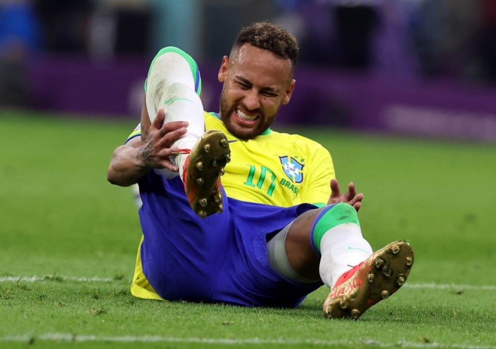
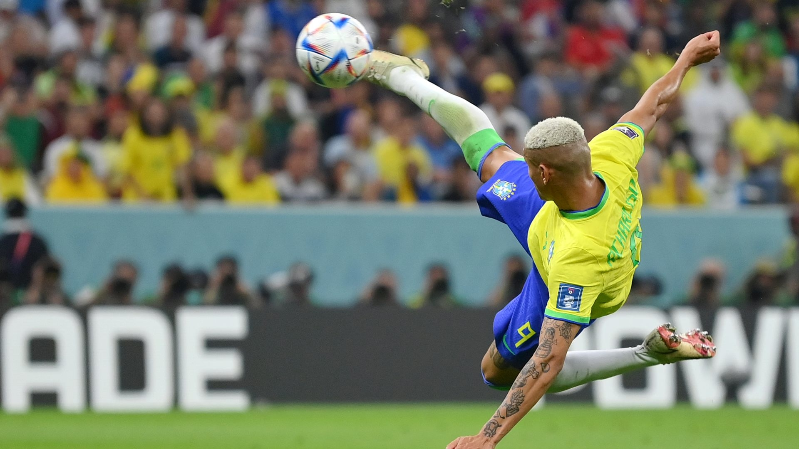
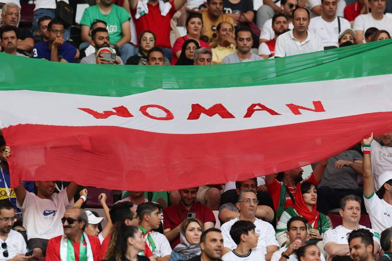
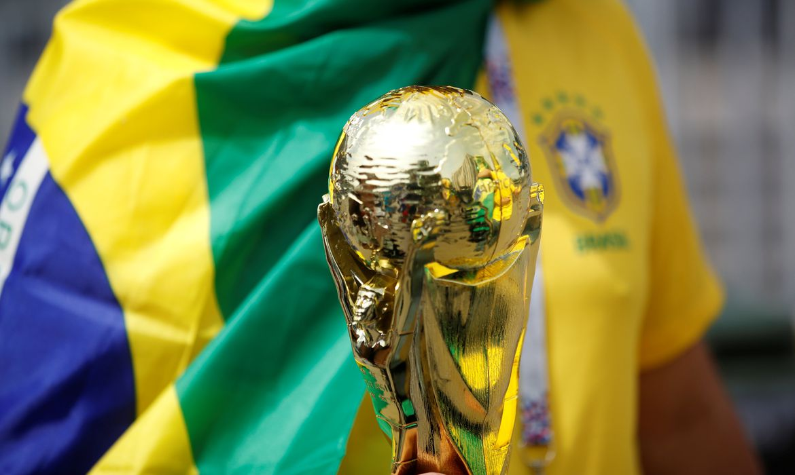

Péssima notícia para a seleção brasileira. Com entorses no tornozelo, o atacante Neymar e o lateral-direito Danilo vão desfalcar o Brasil nos dois jogos restantes da primeira fase da Copa, nesta segunda-feira (28) contra a Suíça, e na sexta-feira (2) diante de Camarões. Neymar teve uma entorse no tornozelo direito na vitória de 2 a 0 do Brasil sobre a Sérvia na estreia da Copa, na quinta-feira (24). O local ficou bastante inchado e o craque da seleção chorou no banco de reservas logo após deixar a partida. Danilo teve uma entorse no tornozelo esquerdo.
O Brasil estreou com vitória na Copa do Mundo. Nesta quinta-feira, contra a Sérvia, no Lusail Stadium, em Doha, no Catar, a Seleção comandado pelo técnico Tite teve mais dificuldades de levar perigo no primeiro tempo, mas voltou melhor na etapa complementar e acabou conseguindo o triunfo por 2 a 0, graças aos dois gols de Richarlison, o Pombo, um deles uma verdadeira pintura, finalizando de voleio. Com o resultado, o Brasil assumiu a liderança do Grupo G da Copa do Mundo, com os mesmos três pontos da Suíça, que bateu Camarões por 1 a 0, mas figurando à frente por ter um saldo de gols maior.
O que significa uma vitória em Copa do Mundo? Para o Irã, que chegou apenas à sua terceira na história ao vencer o País de Gales nesta sexta-feira, é muito mais que três pontos. Do que a esperança de passar de fase pela primeira vez. É a possibilidade de união de um povo em meio à revolução. E é gratidão, especialmente das mulheres.
O sol ainda não tinha raiado quando todos se juntavam em casa ou nas ruas e ligavam a TV. A milhares de quilômetros dali, os gramados japoneses eram o palco para quem produziu a alegria de tantos e tantos brasileiros no lado oposto do planeta. Duas décadas depois, um novo grupo de protagonistas quer repetir a história, agora com um roteiro diferente. O primeiro de sete possíveis capítulos é hoje (24).
